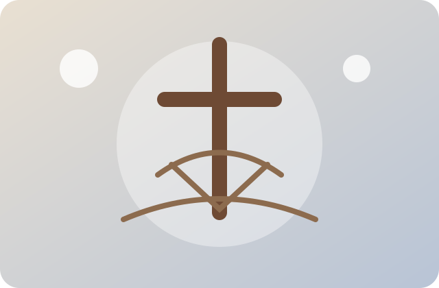
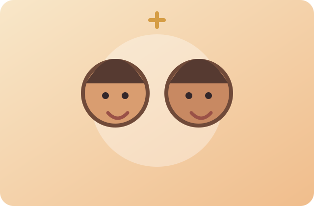

Masa Adven
Misa Minggu Adven I
Berjaga-jaga dan mempersiapkan hati menyambut kedatangan Tuhan.
28 November 2026 · Sabtu17.0029 November 2026 · Minggu06.00 · 08.30 · 17.00
Masa Adven • Natal • Tahun Baru
Jadwal Ibadat dan Misa Natal 2026–2027
Paroki Jatiwaringin – Gereja Santo Leo Agung
Lihat Jadwal Lengkap ↓Mari mempersiapkan hati, merayakan kelahiran Kristus, dan mempererat persaudaraan sebagai satu keluarga Gereja. Temukan rangkaian jadwal ibadat dan Misa Natal berikut.
Silakan perhatikan tanggal dan jam pelaksanaan setiap kegiatan.
Berjaga-jaga dan mempersiapkan hati menyambut kedatangan Tuhan.
Mempersiapkan jalan bagi Tuhan melalui pertobatan dan pembaruan hidup.
Bersukacita karena Tuhan semakin dekat dan setia menyertai umat-Nya.
Meneladani Bunda Maria dalam iman, ketaatan, dan kesiapsediaan menerima kehendak Allah.
Menyiapkan hati menyambut kelahiran Kristus melalui doa, refleksi, dan pembaruan iman.

Berdamai dengan Allah dan sesama melalui pertobatan serta menerima pengampunan Tuhan.
Menghadirkan semangat pertobatan dan rekonsiliasi dalam kehidupan komunitas umat.

Merayakan kelahiran Yesus Kristus, Sang Juru Selamat, Terang Dunia dan sumber pengharapan.
Merayakan Allah yang hadir menjadi manusia dan tinggal di tengah-tengah kita.

Meneladani Keluarga Kudus Nazaret dalam kasih, kesetiaan, dan kehidupan keluarga yang beriman.

Mensyukuri penyertaan Tuhan sepanjang tahun dan menyerahkan perjalanan hidup ke dalam penyelenggaraan-Nya.
Merayakan kebersamaan sebagai satu keluarga besar paroki, berbagi sukacita dan menyongsong tahun baru dalam semangat persaudaraan.

Kristus menyatakan diri sebagai Terang bagi segala bangsa. Seperti orang Majus, kita diajak datang, menyembah, dan mempersembahkan yang terbaik bagi Tuhan.

Mengajak anak-anak mengenal Yesus sebagai Sahabat dan Juru Selamat serta bertumbuh dalam iman, kasih, dan sukacita.

Menegaskan bahwa setiap pribadi dikasihi Allah, memiliki martabat yang sama, dan merupakan bagian utuh dari keluarga besar Gereja.
Tidak ditemukan kegiatan yang sesuai.
Setiap perayaan mengajak kita bertumbuh dalam iman dan mewujudkan kasih dalam kehidupan sehari-hari.
Menantikan Tuhan dengan berjaga-jaga, bertobat, bersukacita, dan membuka hati bagi kehendak-Nya.
Allah hadir di tengah manusia. Kita dipanggil membawa terang, damai, dan harapan bagi sesama.
Meneladani Keluarga Kudus melalui kasih, kesetiaan, pengampunan, dan kepedulian.
Setiap pribadi berharga dan memiliki tempat dalam persekutuan serta kehidupan Gereja.
Natal bukan sekadar mempersiapkan perayaan, tetapi mempersiapkan hati untuk menyambut Yesus.
Terang Kristus hadir untuk menerangi kehidupan kita. Mari mempersiapkan Natal dengan langkah-langkah sederhana:
Sediakan waktu untuk berdoa setiap hari. Bacalah Kitab Suci, renungkan Sabda Tuhan, dan ajak keluarga berdoa bersama.
Natal adalah saat yang tepat untuk memperbaiki hubungan. Beranilah meminta maaf, mengampuni, dan membuka kembali pintu komunikasi.
Tidak harus dengan sesuatu yang besar. Perhatian, waktu, kunjungan, dan bantuan kecil dapat menjadi tanda kasih Kristus bagi sesama.
Kurangi kesibukan dan penggunaan gawai. Luangkan waktu untuk berbincang, makan bersama, saling mendengarkan, dan membangun kehangatan keluarga.
Ikutilah Misa dan Sakramen Tobat. Sambutlah Ekaristi dengan hati yang siap, penuh syukur, dan terbuka terhadap kehadiran Tuhan.
Kita tidak hanya menghias rumah dengan lampu, tetapi juga menerangi hati dengan kasih.
Kita tidak hanya berbagi hadiah, tetapi juga berbagi kepedulian.
Kita tidak hanya merayakan kelahiran Yesus, tetapi membiarkan Kristus hadir dan bertumbuh dalam kehidupan kita.
Jadilah terang bagi keluarga dan sesama!“Terang itu bercahaya di dalam kegelapan dan kegelapan itu tidak menguasainya.”Yohanes 1:5